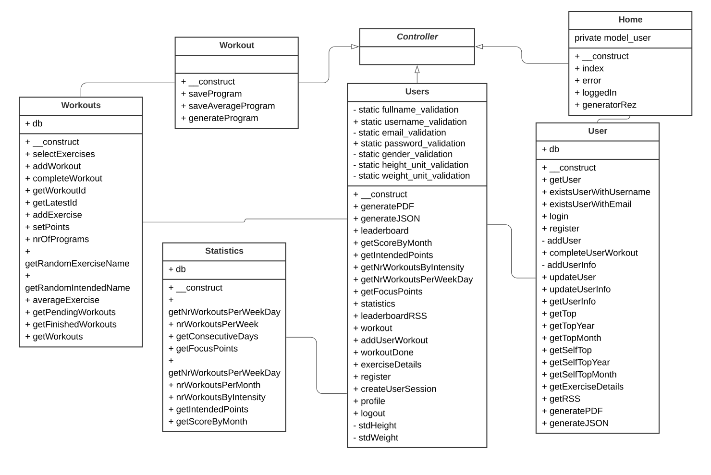
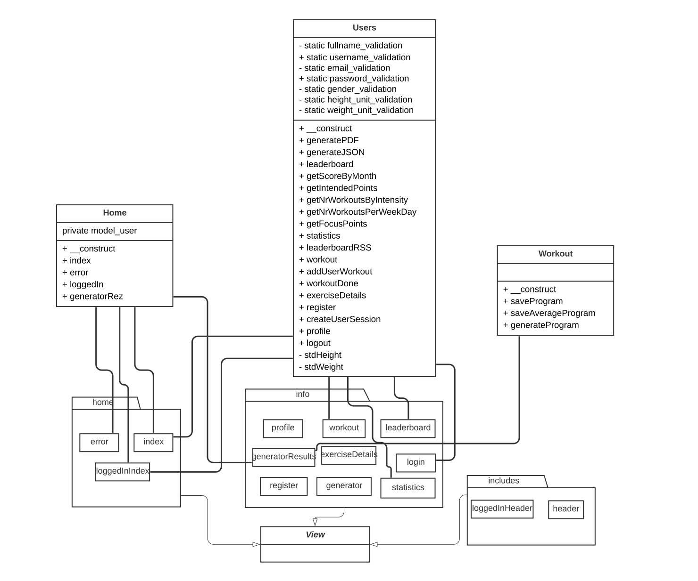
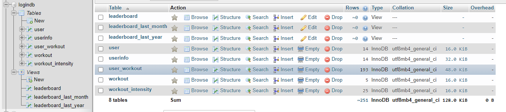
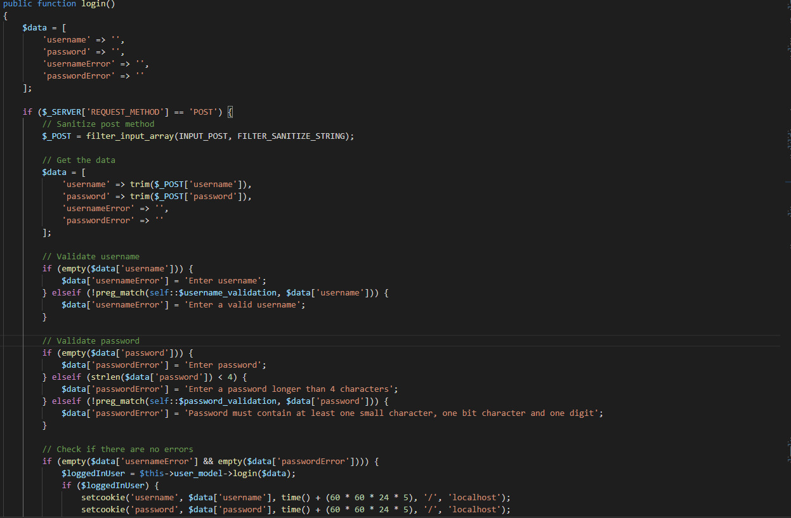
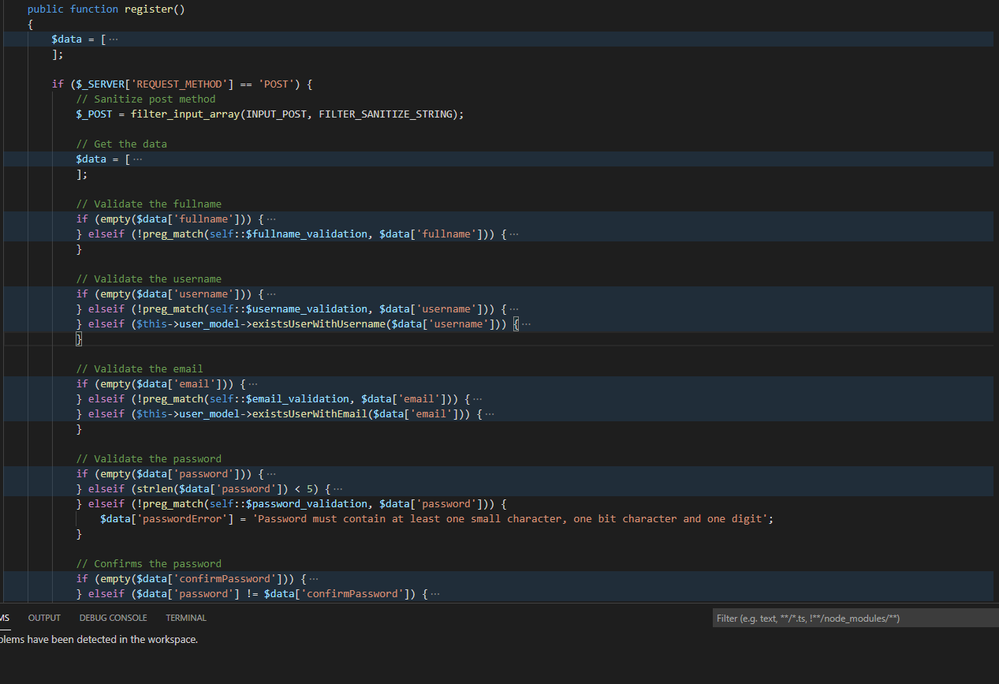
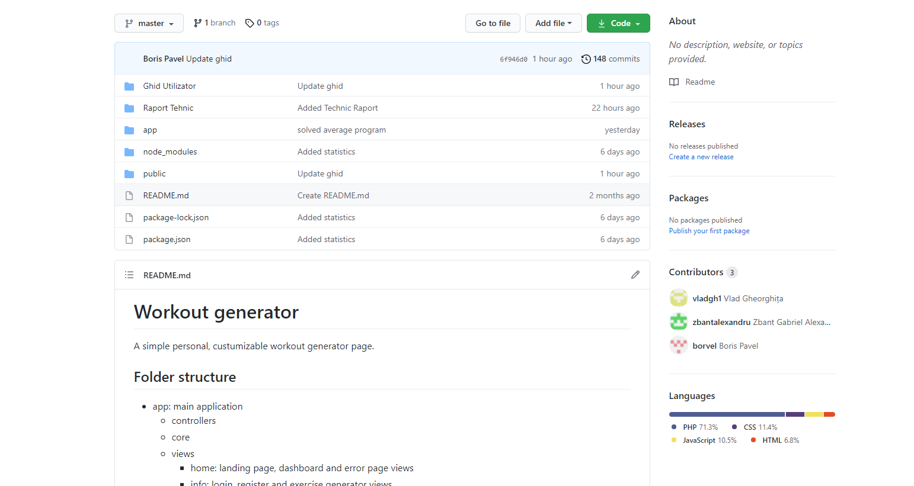

In implementarea site-ului s-a utilizat modelul MVC.
home
Schema MVC a proiectului arata in felul urmator:
 Pentru stocarea datelor s-a folosit sistemul de gestiune a bazelor de date relational MySQL.
Tabele:
Tabela user este folosita pentru a stoca detaliile de logare, cum ar fi numele de utilizator, e-mailul si parola hash-uita. Userinfo detine toate informatiile personale ale unui user, user_workout contine toate antrenamentele pe care le-a generat utilizatorul. workout contine toate detaliile exercitiilor de antrenament, iar workout_intensity punctajele,repetarile, seturile pentru fiecare exercitiu.
View-urile calculeaza punctajele folosind tabelele existente.
Pentru autentificare se creaza o sesiune cu datele utilizatorului si se valideaza username-ul si parola.
Pentru inregistrare se folosesc validators pentru fiecare input.
Pentru management-ul codului am folosit GitHub.
Generare fisiere PDF pentru pagina de leaderboard.
Generare grafice pentru pagina de statistica.